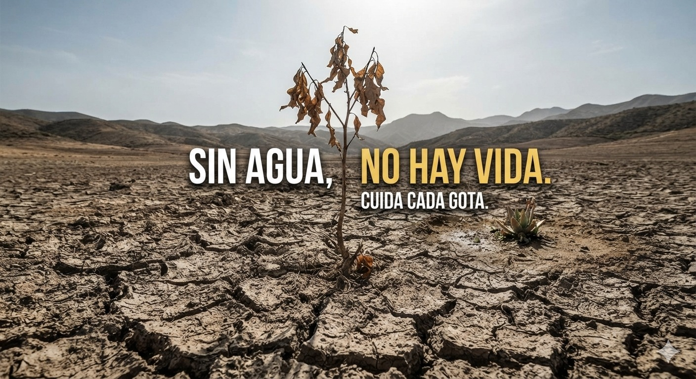
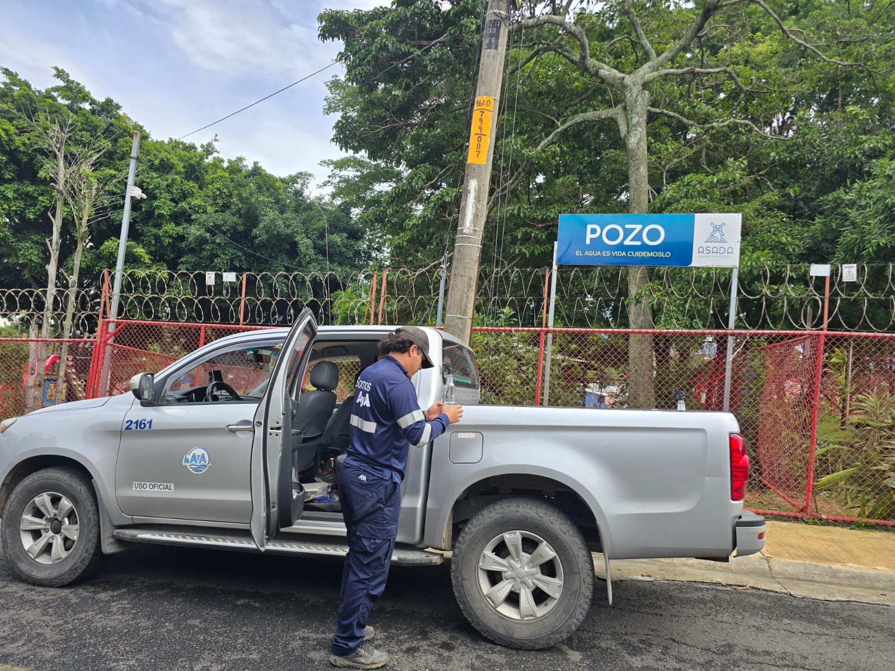

Sin Agua, No hay vida
"El agua vale mucho más que el precio que pagamos por ella: tiene un valor incalculable y sumamente complejo para nuestros hogares,nuestra cultura, nuestra salud, nuestra educación y nuestra economia"
Ver más